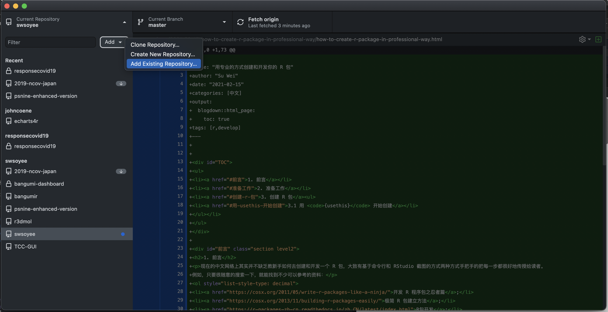
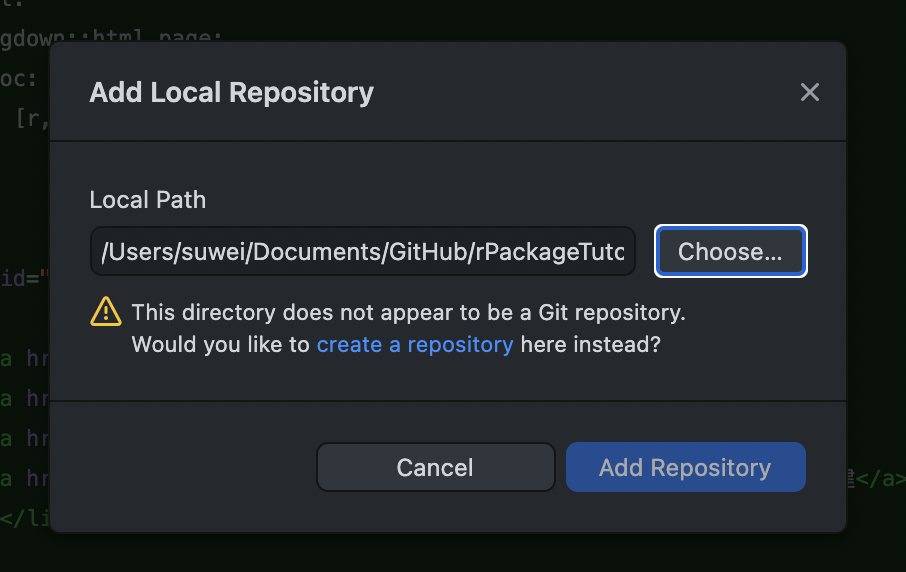
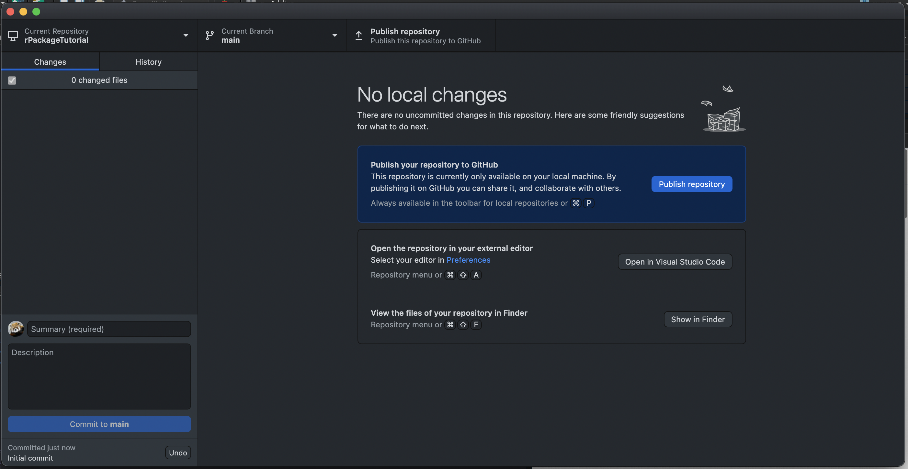
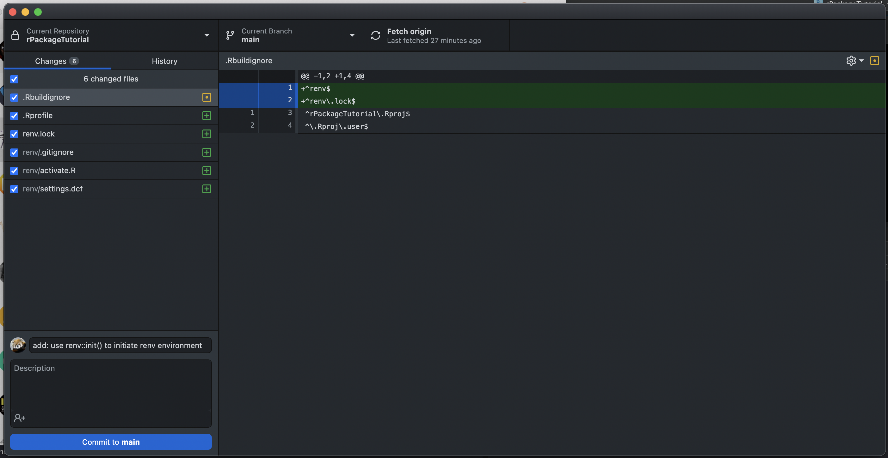
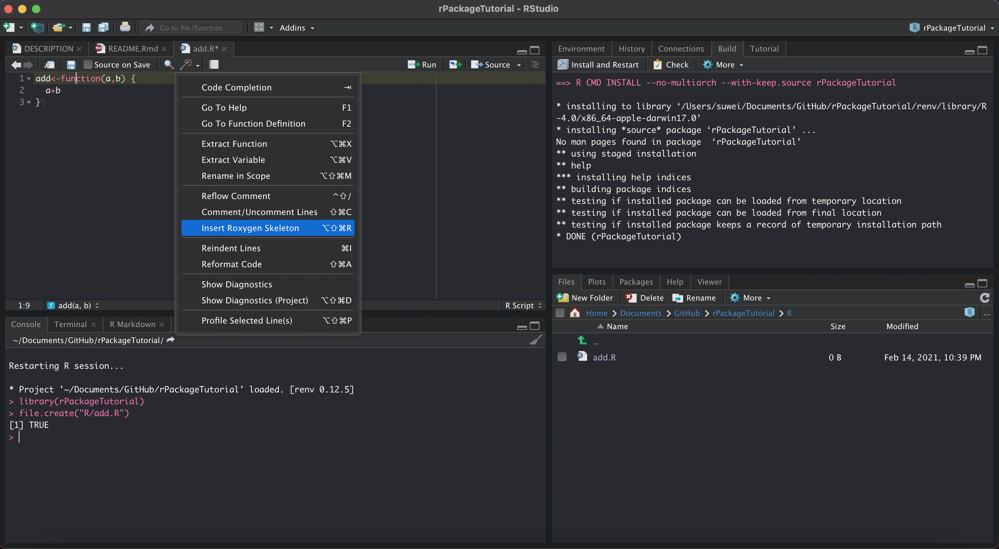
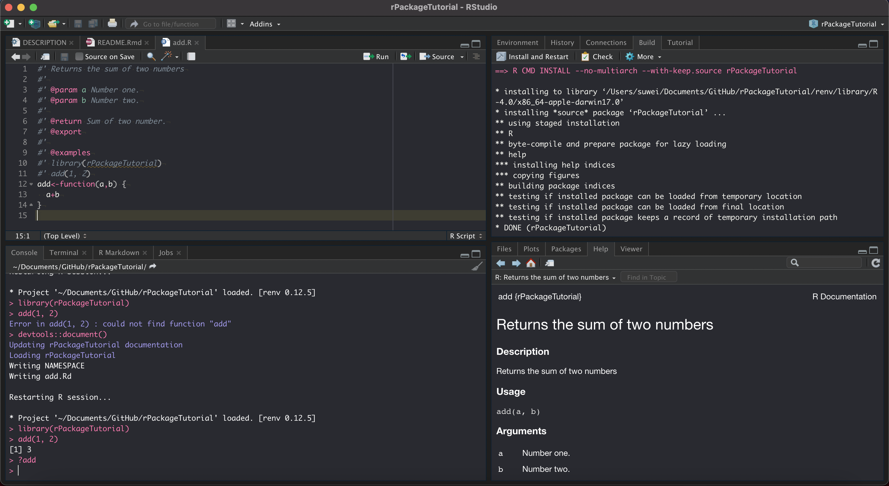
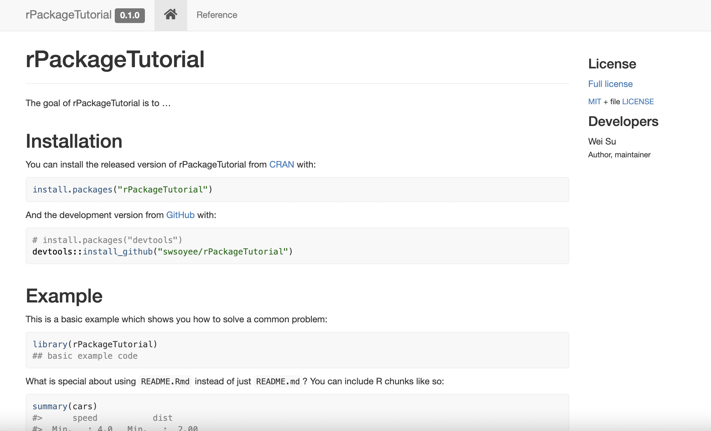
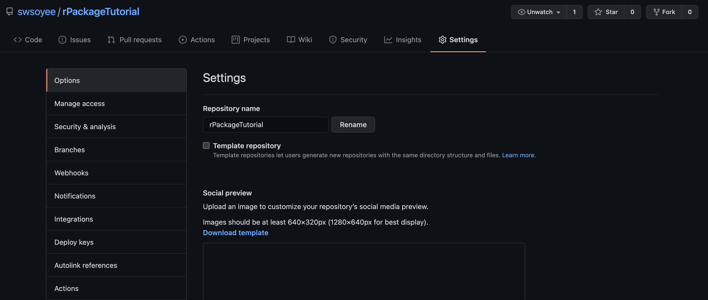

rPackageTutorial is an easy-to-understand tutorial about how to create an R package with some basic settings in a professional way for those R beginner to quickly experience the development process.
1. 前言
现在的中文网络上其实并不缺乏教新手如何去创建和开发一个 R 包，大致有基于命令行和 RStudio 截图的方式两种方式手把手的把每一步都很好地传授给读者。 例如，只要很随意的搜索一下，就能找到不少可以参考的资料：
- 开发 R 程序包之忍者篇;
- 极简 R 包建立方法;
- R包开发;
- 如何快速写一个R包
- 9分钟写个R语言包：菜鸟致简速成
- R语言–创建（编写）R包
- 创建R包
- R 包开发
- R包编写详细教程
- 创建R包+封装函数+上传到github
还有数不胜数的学习笔记和知识分享类的文章。那么问题来了，为什么我还要再写一篇来分享如何创建 R 包的文章呢？ 动机其实也很简单，可能也是由于自己阅读或者搜索深度不够，目前还没有发现一篇说到如何用“专业”的方式来创建 R 包的教程。
即使有（如上述参考链接中的 3. R包开发），略微过于详细，没有花上个把两天是很难体验到全流程的。
因此，本文的主要目的就是用最短的时间，用专业的（自称）方式创建一个高逼格的 R 包并且托管在 GitHub 上。 也因此，会对很多局部的细节不做过多的讲解，先把流程跑通，对全流程有个大致的理解后，想了解细节时再去做具体调查即可。
2. 准备工作
在开发前，你只需要完成 2 项工作：
- 为了使用最简单易懂的方式进行操作，下载并且安装好 RStudio（R环境当然是默认就具备了）就不用说了；
- 一个 GitHub 账号（相关教程太多，这里也不展开讲解）；
- GitHub Desktop（Git操作的图形界面，非必需但是方便了解代码发生了什么变化）。
此外，在 GitHub 上也放了一个和本教程相关的仓库（swsoyee/rPackageTutorial）。 也可以参看每一次 Commit（提交）来了解每一步操作具体发生了什么变化，从而加深理解。 每一步操作都没有唯一答案，所写的内容也只是其中的一个可供参考的步骤而已。
部分界面截图如 RStudio 和 GitHub 的界面可能会有所不同是因为我个人进行了相关主题或者插件设置，不影响文章内容理解。
3. 创建 R 包
在文章中，我将展示编写一个只包含有两个数加法函数的包作为例子。 包的功能本身不是关键，关键是构建一个专业的 R 包其拥有的功能以外的整个外部环境。 再次重复一下前言中所提到的，很多细节部分不会过多讲解，但是会提点到关键词，因此有需要的可以根据关键词去搜索即可补充了解所需知识。 好，废话不再多说，那就正式开始了。
3.1 用 {usethis} 开始创建
为了使得重现步骤更为简单，在这里我们基本全部使用代码的方式来完成创建工作。首先随便打开一个 R 的进程，默认或者在 RStudio 中都可以。
# 如果没有 {usethis} 包的话，先下载安装。
install.packages("usethis")
# 命名一个 {rPackageTutorial} 包，并且创建，path 可以填写你想创建在哪个文件夹中。
usethis::create_package(path = "../rPackageTutorial")输入完毕后，自动会弹出一个新的 RStudio 窗口，并且自动设定了 ../rPackageTutorial 为当前工作文件夹，名为 rPackageTutorial 就创建好了。 本期教程结束，谢谢！
3.2 加入版本控制（Git）
这一步的方法有很多种，这里写的是本人用的最简单的一种。 打开 GitHub Desktop（默认已经完成了登陆 GitHub 账号的操作），点击 Add > Add Existing Repository，在弹出的 Add Local Repository 中选择所创建好的 rPackageTutorial 路径。

会提示您选择的文件夹还没有包含 Git 的相关设定，因此只需要继续点击 create a repository 创建相关设定即可。

在下一步的 Create a New Repository 中可以什么都不改，直接点击右下角的 Create Repository 按钮完成项目的创建。

至此，本地的设定就完成了，只需要点击 Publish repository，然后设置公不公开后即可将项目推送到你的 GitHub 中去了。 可以点击这里 d78d245 查看第一次推送时候的变更内容。

3.3 用 {renv} 进行依赖（加载包）的版本控制
让我们回到 RStudio，这次我们引入的是 {renv} 这个包来进行依赖的版本控制。 用最简单的话来说，就是为了自己写的包不会因为所使用的一些别人写的包发生大规模改变的时候自己的包也跟着受到影响，和让合作开发者能迅速构建和你同样的开发环境，减少由于所使用的包版本不同导致的问题发生。
# 安装 CRAN 版的 {renv}
install.packages("renv")
# 初始化环境
renv::init()初始化时候的信息：
* Initializing project ...
* Discovering package dependencies ... Done!
* Copying packages into the cache ... Done!
The following package(s) will be updated in the lockfile:
# CRAN ===============================
- renv [* -> 0.12.5]
* Lockfile written to '~/Documents/GitHub/rPackageTutorial/renv.lock'.
Restarting R session...
* Project '~/Documents/GitHub/rPackageTutorial' loaded. [renv 0.12.5]
# 保存当前所用的包环境，当然我们才刚刚开始开发，别的包都没有引入
renv::snapshot()用于记录依赖的 lockfile 已经更新完毕：
在持续开发的过程中，只要用到下述几个常用命令即可，更多的可以到文档中了解：
- 如果有引入新的包，运行
renv::snapshot()进行lockfile的更新； - 如果想更新所使用的包，运行
renv::update()进行包本身的更新； - 如果换了电脑进行开发，运行
renv::restore恢复到开发时用的包环境；
完成这一步后，不要忘记进行 Git 的提交工作。 让我们回到 GitHub Desktop，在 Summary (required) 中提交本次改动的内容（在这里我写了 使用renv进行环境初始化），点击 Commit to main 完成本地提交后，点击 Push origin 推送到云端（GitHub）上（2493654）。

至于如何写好提交信息可以参考Angular提交信息规范，如果要显得包较为专业的话，那么这些小细节也是不容忽视的。 在这之后将不再赘述每一步操作的提交工作，可以参考示例项目的提交记录即可。
注：在本次教程中没有每次都适时的进行
renv::snapshot()的包更新操作，在开发当中，每次引入或者使用新包的适合都建议进行一次lockfile的更新（bc5051d）。
3.4 创建 README
README 是一个项目的入口，因此拥有一个（至少看起来）专业的 README 是必不可少的。 在这里我们直接用命令来进行创建：
# 引入必备包 {rmarkdown}
install.packages("rmarkdown")
# 虽然也可以使用 usethis::use_readme_md()，看个人需求（不详细讲解区别）
usethis::use_readme_rmd()一个默认的 README.Rmd 模版就创建完成了，你可以自由的编写内容后点击 Knit 从而生成所需要的 README.md 文档。
注：由于设定，每一次编写后必须要点击
Knit进行更新才能提交本次变更。
第一次 Knit 的时候，在 README.Rmd 会有你的包加载的这一条命令，因此需要先将包成功打包一次才能成功执行，否则会报错。 或者你也可以先把自动生成的模版中的 library(rPackageTutorial) 先注释掉即可。

完成后回到 GitHub Desktop 进行提交（658b233）。
3.5 编写函数
来到 R 包的函数编写部分了，让我们直接在根目录的 R 文件夹下建立一个 add.R 文件来保存我们写好的函数。 一个函数一个文件的管理方式是比较稳妥的，如果是每一个函数都很简单的同一个类函数的话也可以放到同一个文件中。
# 通过 RStudio 的 File > New File > R Script 也一样
file.create("R/add.R")
# 打开文件开始编写，写入下列内容
add<-function(a,b) {
a+b
}至此，我们只是在一个文件里写了一个函数，但是还没有让这个函数包含到我们的包中。 这时候，就需要插入一些文档让打包的时候能够识别这个函数。 这一步我们可以点击图中左上的 魔术棒 按钮（放大镜图标的右侧），点击 Insert Roxygen Skeleton 快速生成文档骨架。

# 点击 Insert Roxygen Skeleton 后就会出现文档结构
#' Title
#'
#' @param a
#' @param b
#'
#' @return
#' @export
#'
#' @examples
add<-function(a,b) {
a+b
}
# 让我们完成编写
#' Returns the sum of two numbers
#'
#' @param a Number one.
#' @param b Number two.
#'
#' @return Sum of two number.
#' @export
#'
#' @examples
#' library(rPackageTutorial)
#' add(1, 2)
add<-function(a,b) {
a+b
}
# 写完后，需要生成文档才能够真正使用
devtools::document()输出结果：
之后再按一下 Install and Restart 就可以使用了。也可以在命令行中使用 ?add 来查看一下自己定义的帮助文档。

最后，回到 GitHub Desktop 中提交本次更改（88f0c57）。 至此，你的包就创建完成啦！本期教程结束，再次感谢！
3.6 用 {styler} 来美化代码
包是完成了，但是对于具有强迫症的程序员来说，代码似乎并不美观？ 那这个时候就交由 {styler} 来替我们美化代码吧。
# 安装 {styler}
install.packages("styler")
# 对整个包进行代码美化
styler::style_pkg()结果显示，一个文件被进行了代码格式上的修改，一些空格被自动添加到了里面：
Styling 2 files:
R/add.R ℹ
.Rprofile ✓
────────────────────────────────────────
Status Count Legend
✓ 1 File unchanged.
ℹ 1 File changed.
x 0 Styling threw an error.
────────────────────────────────────────
Please review the changes carefully!由于我们的函数很简单，当开发一个较大的、较为复杂的包的时候，那么就能看到很明显的变化了。 如果别人帮你改进了部分代码（提交了一个 Pull Request）却没有进行代码优化那怎么办呢？难道每次都要手动提醒对方吗注意修改格式？别着急，后续将会告诉你答案。 还是那句话，不要忘记提交本次更改（08df7c2）。
3.7 用 {lintr} 来规范代码
命名法一直都是码农界一个经常讨论的问题，不同语言有不同的较为规范的命名法则，有些人喜欢用驼峰式，有些喜欢下划线式。 如果在别人好心帮你改进了代码但是没有遵循一定的法则，作为项目创建者的你要在格式上面指指点点，Pull Request 的作者也需要回应你的指点，很有可能搞得双方都不是特别舒服。 如果在项目建立当初就设定了规范，让规则来说话，就能很好地避免这种冲突。这里我们使用 {lintr} 来快速帮我们解决这个问题。
# 安装 {lintr}
install.packages("lintr")
# 对整个包进行不符合规范的代码查询（当然，都没有写多少代码，当然不会出现什么错误结果）
lintr::lint_package()
# 比如我们在 add 函数中增加一个超过80字符的注释
add <- function(a, b) {
# aaaaaaaaaaaaaaaaaaaaaaaaaaaaaaaaaaaaaaaaaaaaaaaaaaaaaaaaaaaaaaaaaaaaaaaaaaaaaa
a + b
}
# 再次执行
lintr::lint_package()命令完成后会在 RStudio 中弹出一个 Markers 的面板，显示：
嗯，当然太长的代码会不利于阅读，因此默认会限制了代码长度。 各种设置都可以在 {lintr} 中进行参考，一般我们都使用默认规则即可。 如果需要自定义规则，则需要在项目根目录下创建一个 .lintr 文件，这部分可参考官方文档进行设置，这里不做赘述。 我们可以在利用 GitHub Action 来对提交的代码进行规范检查，这样一来如果有不规范代码被提交的话会自动提示错误，这样你就可以要求代码提交这进行更改了。
# 在 GitHub Action 中设置 lintr
usethis::use_github_action("lint")运行结果：
✓ Setting active project to '/Users/suwei/Documents/GitHub/rPackageTutorial'
✓ Creating '.github/'
✓ Adding '^\\.github$' to '.Rbuildignore'
✓ Adding '*.html' to '.github/.gitignore'
✓ Creating '.github/workflows/'
✓ Writing '.github/workflows/lint.yaml'老样子，提交并推送代码到 GitHub 上（454c7f6）。 在这之后的每次当你提交的代码通过检查的时候，就会有一个绿色的小勾表示通过，是不是稍微显得专业一点了呢？

3.8 用 {testthat} 来测试代码
在编写一个具有可靠性的包的时候，特别是当函数变得复杂的时候，测试是必不可少的。 我们可以用 {usethis} 来快速设定编写测试所需要的 testthat 的环境。
# 设定环境
usethis::use_testthat()弹出运行结果：
✓ Adding 'testthat' to Suggests field in DESCRIPTION
✓ Setting Config/testthat/edition field in DESCRIPTION to '3'
✓ Creating 'tests/testthat/'
✓ Writing 'tests/testthat.R'
● Call `use_test()` to initialize a basic test file and open it for editing.弹出运行结果：
# 在自动生成的测试文件中包含了下述代码
test_that("multiplication works", {
expect_equal(2 * 2, 4)
})
# 将其修改成有意义的测试
test_that("add() function return the sum of two number", {
expect_equal(add(1, 2), 3)
})在写完测试后，可以点击编写面板的右上角 Run Tests 进行单文件测试，也可以选择 Addins > Report test coverage for a package 进行整个包的函数测试覆盖率的测算。

当然还有其他办法来达成同样的目的，这只是其中一种方法而已。 但如果他人对你的代码进行修改或者实现了功能时，通过什么办法确保对方修改的代码不会造成 Bug 呢？ 同样是通过 GitHub Action 来进行实现，稍后将会讲解到。回到 GitHub Desktop 提交我们本次的修改（2655b2a）。
3.9 编写包的说明
在别的教程中，一般都会把包的说明放到前面，说明这也是很重要的一步。 在这里，为了把说明部分都汇总到一起，就将其放到了偏后的部分。
打开根目录下的 DESCRIPTION 文件，对包说明进行一些修改，主要是 Title、Authors 和 Description 部分，别的都可以原封不动：
Package: rPackageTutorial
Title: Create R Package In A Professional Way Tutorial
Version: 0.0.0.9000
Authors@R:
person(given = "Wei",
family = "Su",
role = c("aut", "cre"),
email = "swsoyee@gmail.com")
Description: Show an example of how to create a r package in a professional way.
License: `use_mit_license()`, `use_gpl3_license()` or friends to
pick a license
Encoding: UTF-8
LazyData: true
Roxygen: list(markdown = TRUE)
RoxygenNote: 7.1.1
Suggests:
testthat (>= 3.0.0)
Config/testthat/edition: 3通过 {usethis} 来修改 License 和 Version 信息：
# 如果没有依赖到别的具有不同版权的包的话，一般无脑 MIT 即可
usethis::use_mit_license()结果显示：
✓ Setting active project to '/Users/suwei/Documents/GitHub/rPackageTutorial'
✓ Setting License field in DESCRIPTION to 'MIT + file LICENSE'
✓ Writing 'LICENSE'
✓ Writing 'LICENSE.md'
✓ Adding '^LICENSE\\.md$' to '.Rbuildignore'
# 升级版本号
usethis::use_version()There are uncommitted changes and you're about to bump version
Do you want to proceed anyway?
1: Negative
2: No
3: Yeah
Selection: 3
Current version is 0.0.0.9000.
Which part to increment? (0 to exit)
1: major --> 1.0.0
2: minor --> 0.1.0
3: patch --> 0.0.1
4: dev --> 0.0.0.9001
Selection: 2
✓ Setting Version field in DESCRIPTION to '0.1.0'
There is 1 uncommitted file:
* 'DESCRIPTION'
Is it ok to commit it?
1: No way
2: I agree
3: Absolutely not
Selection: 3最后，提交本次变更（7052d68）。 只有在完成 DESCRIPTION 的合理编写后，运行所编写的 R 包的检查时，才能够无错误通过。
# 轻量版检查
devtools::check()省略中途的信息：
── R CMD check results ───────────────────────────── rPackageTutorial 0.1.0 ────
Duration: 36.8s
0 errors ✓ | 0 warnings ✓ | 0 notes ✓
R CMD check succeeded一切安好。做到这个地步，你的包已经逐渐流露出专业的味道了。
3.10 用 {pkgdown} 制作包的说明书
在很多较为专业的包中，经常能看到会有一个包的专门的网站（在线版）说明书以供用户查阅。 就算我们只创建了一个 1 + 1 = 2 的函数，该有的逼格可必须得有。让我们同样使用 {pkgdown} 来完成创建。
# 安装 {pkgdown}
install.packages("pkgdown")
# 初始化你的用户手册网站
usethis::use_pkgdown()结果显示：
✓ Adding '^_pkgdown\\.yml$', '^docs$' to '.Rbuildignore'
✓ Adding '^pkgdown$' to '.Rbuildignore'
✓ Adding 'docs' to '.gitignore'
● Record your site's url in the pkgdown config file (optional, but recommended)
● Modify '_pkgdown.yml'
# 让我们来试一下看创建我们的网站
pkgdown::build_site()
要对网站进行定制化，只需要给 _pkgdown.yml 中添加配置即可。 具体可以参考文档说明，因此在这里也不赘述了。 还是别忘了提交本次变更（18b5d45）。
3.11 用 Github Action 自动检查
当包越来越复杂，代码和文档都大量增加的时候，特别是如果还是想搞开源，期待他人能更好地参与到由你主导的 R 包开发时，就需要设定一些自动检查的流程，从而减少一些不必要的“摩擦”。 同时，如果每次小更新都要执行一大堆的文档网站更新，运行测试等等操作的话实在是太烦了，作为一个程序员，就好好利用自动化的力量吧。
# 如无特殊需求，或者新手入门下述命令直接无脑设置即可
usethis::use_tidy_github_actions()显示结果：
✓ Adding 'covr' to Suggests field in DESCRIPTION
✓ Writing 'codecov.yml'
✓ Adding '^codecov\\.yml$' to '.Rbuildignore'
✓ Adding Codecov test coverage badge to 'README.Rmd'
● Re-knit 'README.Rmd'
✓ Writing '.github/workflows/R-CMD-check.yaml'
✓ Adding R-CMD-check badge to 'README.Rmd'
● Re-knit 'README.Rmd'
✓ Writing '.github/workflows/pr-commands.yaml'
✓ Writing '.github/workflows/pkgdown.yaml'
✓ Writing '.github/workflows/test-coverage.yaml'很好，直接返回 GitHub Desktop 保存提交。 嗯？是否无法提交了？弹出错误提示：
Commit failed - exit code 1 received, with output: 'README.md is out of date; please re-knit README.Rmd
use 'git commit --no-verify' to override this check'还记得上文提到的备注吗？
注：由于设定，每一次编写后必须要点击
Knit进行更新才能提交本次变更。
所以在此，由于引入的设置命令中对 README.Rmd 进行了修改（加了 2 个徽章），因此首先需要更新我们的 README.md 才行。 打开 README.Rmd 点击编辑面板上方的 Knit 进行同步更新。或者使用下述命令更新也可。
devtools::build_rmd()提交本次变更推送到 GitHub 中（e78b035）。 点开检查的标记，发现多出了非常多的流程。

包括 {lintr} 的代码规范性检查、 test-coverage 的测试覆盖度计算、 pkgdown 的帮助文档网站生成、包的构建结果检查 R-CMD-check 等等一些列的操作都会在合适的时候自动执行。 其结果会反映到 README 和网站中，是不是整个就显得专业起来了呢？
不过等下，我们还需要在 GitHub 上完成一点小设置：
首先在 GitHub 上设置激活我们的帮助手册托管页面。 来到项目的 Setting，向下滚动到 GitHub Pages 一项。

按图中设置分支 Branch:gh-pages / root 后按保存即可。

保存成功后会自动返回页面最上方，还是向下滚动到刚才的 GitHub Pages，能看到多了一行字，没几十秒就能看到我们的网址被激活了：
然后让我们回到 GitHub 仓库的首页，你可能会看到一个 codecov | unknown 的小徽章。 但不用着急，只需要后续再提交内容的话，unknown 就会自动更新为测试覆盖度了。
3.12 丰富文档
当我们完成上面步骤的设置后，整体环境也搭建的差不多了，剩下就是丰富我们的各种文档，让专业程度更上一层楼。
# 增加 NEWS 页面，用于记录每一次升级所做出的变更
usethis::use_news_md()显示结果
✓ Writing 'NEWS.md'
● Modify 'NEWS.md'
There is 1 uncommitted file:
* 'NEWS.md'
Is it ok to commit it?
1: Yeah
2: No
3: Negative
Selection: 2由于默认的提交信息没有遵循我们的规范，所以我选择了不自动提交而手动修改提交信息后用 GitHub Desktop 自己提交06b3cd5。
# 添加 Code of Conduct
usethis::use_code_of_conduct()根据弹出的提示，把自动生成的内容添加到 README.Rmd 中并且重新生成 README.md 后提交本次变更c5834f3。
接着手动在 DESCRIPTION 中最后的位置添加项目地址和 Bug 报告链接：
URL: https://github.com/swsoyee/rPackageTutorial
BugReports: https://github.com/swsoyee/rPackageTutorial/issues注：在这里同样可以通过
usethis::use_github_links()来达成相同目的，但是首先要进行 PAT 的设置。 有兴趣的可以自己设置一下，这里就采取最简单易懂的复制粘贴形式来达成相同目的了。
提交本次变更并且推送后8166dfa，等通过 GitHub Action 调用 pkgdown 自动执行完操作后，一个页面信息更丰富的专业包说明网站就被自动更新了。

4. 结语
在洋洋洒洒地完成了上述所有步骤后，一个能“唬人”的专业 R 包开发环境就建立完毕了。 接下来只需要继续的在 R 文件夹中添加自己编写的函数，和 tests/testthat 中持续编写追加你的内容，每次更新一点内容就即使进行提交，以记录你的每一步变更（推荐函数和测试同时提交，见 TDD原则）。 本地编写时候，时常用 devtools::check() 进行检查，确保每一次变更都不会造成你的包出现问题。
即使是个人开发，对于大范围的改动也尽量通过使用 Pull Request 的方式进行，而不是直接推送到 master 或者 main 的主分支中，方便搞砸时候的回退操作等等。 只有构建了一个较为专业的环境，用户在搜索的时候才会对你的包略有信赖，从而获取用户。 而也只有遵循了开源社区的规范时，才更方便他人来对你的包进行改进，降低了阅读源码的难度。
除了以上列举的步骤外，其实还有很多能用的东西，但如果写起来真是没完没了。 如果感兴趣的话可以去查看 Hadley Wickham 编写的 R Packages了解更多详细内容和具体的说明。